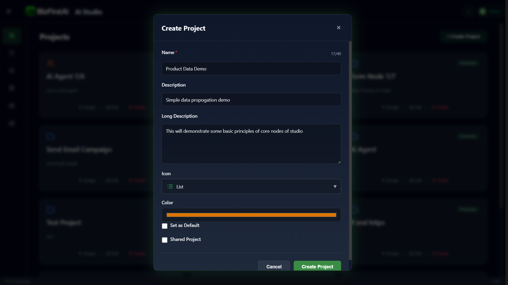
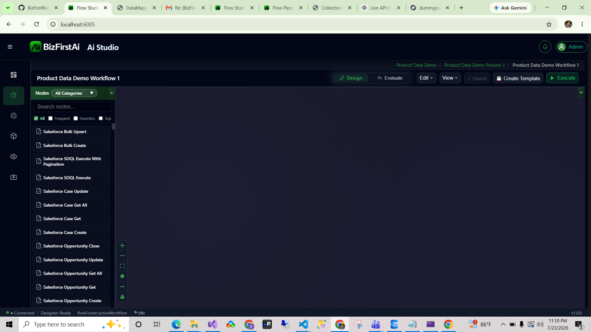

Create the Workflow
Before any nodes go on the canvas, open Ai Studio and create the project that everything else in this guide builds on.
For a deeper look at the Project → Process → ProcessThread hierarchy this creates, see Guide 1: Studio How-To. This page only covers the specific choices used for this sample.
Step-by-Step
Open the Projects Dashboard
Ai Studio's landing page lists every project you have access to as a card, with Design / Edit / Delete actions.
Click + Create Project
Top-right of the Projects panel.
Fill In the Project Details
Name: Product Data Demo. Description: Simple data propogation demo. Long Description: This will demonstrate some basic principles of core nodes of studio. Icon: List. Color: orange.
Open the Empty Canvas
The new project creates a Process and a Workflow underneath it automatically — the breadcrumb reads Product Data Demo / Product Data Demo Process 1 / Product Data Demo Workflow 1.



Product Data Demo) contains one or more processes (Product Data Demo Process 1), which in turn contain workflows (Product Data Demo Workflow 1). Creating a project via this dialog auto-creates the first process and workflow for you.